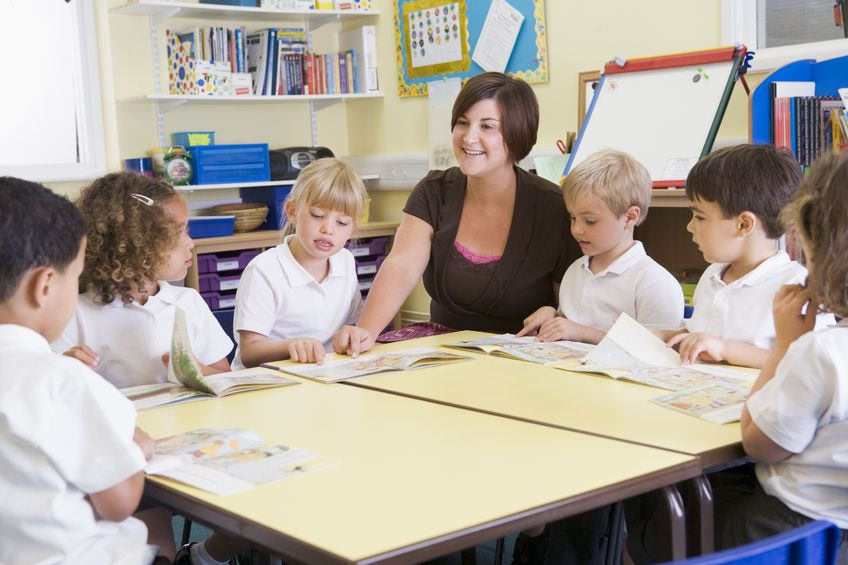
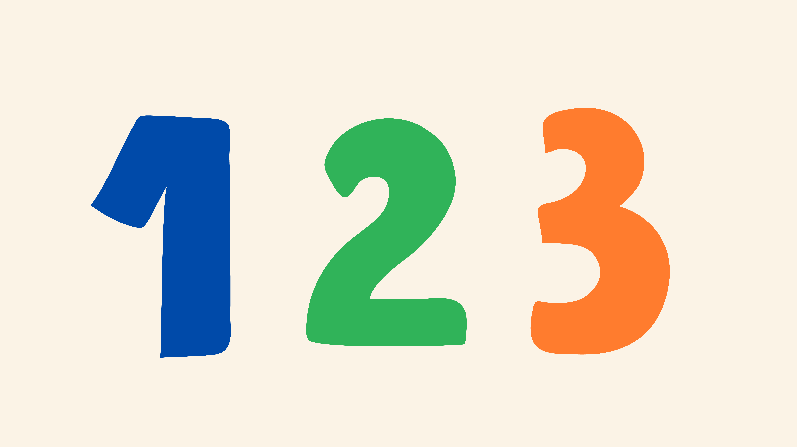
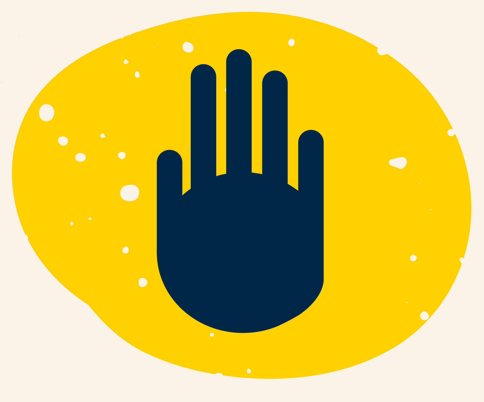
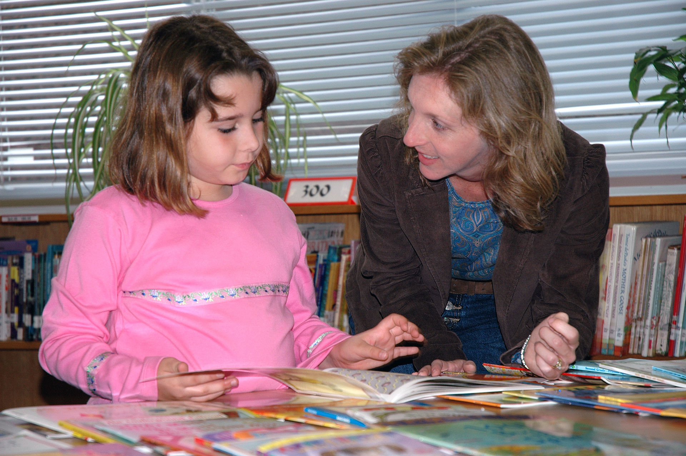
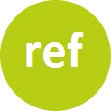

Information for teachers
This is an information webpage about children with synaesthesia, for teachers and other educators.
What is synaesthesia? ---------- Synaesthesia is a condition that causes an unusual 'merging of the senses'. For example, hearing sounds might cause taste sensations in the mouth (eg. a doorbell might trigger the taste of salt). Other synesthetes might experience letters, numbers or words as coloured in some way (eg. 'A' might be red, 'Monday' might be green) and so on. Synaesthesia has many different forms, is equally common in boys & girls, has a neurological, & genetic basis, and is recognised by health bodies such as the NHS (UK National Health Service) although its exact causes are still being researched. Click here for general FAQs about synaesthesia.
Why might teachers care about synaesthesia?
If you know what synaesthesia is, you probably think it’s rare and you'd be right. It affects around 4.4% of the population (refs 1,2) but that equates to 1 in every 23 people which means on average, one child in every classroom you teach could have some form of synaesthesia (refs 1,2,3). Many people with synaesthesia, and especially children, don't mention it because they think everybody has it. And some synaesthetes prefer not to talk about their synaesthesia because they've met with disbelief or other bad reactions in the past. Given this, you may like to understand a more about synaesthesia and how it can affect children in your school.

How might I recognise a child with synaesthesia?
Children say funny things, but sometimes those things are true descriptions of synaesthesia. When you know what synaesthesia is, it can be fairly easy to recognise. Below are descriptions of common synaesthesias, a longer list of different types of synaesthesia is available here (link under construction).
Are some forms of synaesthesia more common than others?
There are mpossibly hundred of types of synaesthesia, but some forms are more common than others. Outlined below are four of the most comon types we know about that you may encounter.
Grapheme-colour synaesthesia Children with grapheme-colour synaesthesia for example see colours when they think about letters or numbers. For example, the letter A might be red, B might be yellow etc. These colours are experienced as a type of consistent, automatic mental imagery and to the child are just as much a part of the letter/number as its shape. Grapheme-colour synaesthesia has been linked to differences in parts of the brain that perceive colour (ref 4) but synesthesia can also extend beyond colour and the five senses. 
Sequence-personality synaesthesia For children with sequence-personality synaesthesia (also known as ordinal linguistic personification) these sequences like letters, numbers, days etc. trigger a strong sense of a personality (e.g., Monday might be a mother-type) and sometimes these personalities can be mean or unpleasant (e.g., 7 might be a scary man). This type of synaesthesia has been linked to very slight differences in the part of the brain that connects the two brain hemispheres. 
Sequence-space synaesthesia In sequence-space synaesthesia, sequences are mapped out in space in particular spatial patterns like lines or zig-zags. Yet other children with synaesthesia might experience tastes, shapes, textures, odours, triggered by the sounds they hear, or by other types of everyday activities. Mirror-touch synaesthesia Another example is mirror-touch synesthesia, in which children experience touch sensations and even pain when they see other children in pain (ref 5). 
Mirror-touch synaesthesia Another example is mirror-touch synesthesia, in which children experience touch sensations and even pain when they see other children in pain (ref 5). 
What could I do if parents tell me their child has synaesthesia?
The suggestions below represents the opinions of the website author (Prof. Julia Simner), given previous real-life cases, and the latest scientific research. But ultimately, the best decision for any child will be based on the views of parents, working with you towards the child's best interests. It may be that the best action in some cases is no action at all but simply offering an understanding ear. The majority of parents who contact us are simply trying to convince teachers that synaesthesia exists and that it may be having some kind of effect on their child. We have provided a brief downloadable information sheet on childhood synaesthesia, which can help parents explain to teachers how synaesthesia is affecting their child.
Are there any benefits and disadvantages to having synaesthesia?
Synaesthesia can sometimes have benefits like improving memory and processing speed but some children with synaesthesia experience difficulties. Click below to learn more, and how you can support the child whilst at school.
Thank you for working with parents to support children with synaesthesia. Overall, a child with synaesthesia will primarily simply wish to be believed. This small act is extremely powerful for self-esteem and overall well-being. Although synaesthesia is rare, the likelihood is you will always have more than one child with synaesthesia in your school at any given time (refs 2,3). We welcome feedback on our suggestions above and your own experiences with synaesthesia in the classroom - please contact us!.

If you are a teacher who has not yet entered your unique anonymous reference code from a parent via our downloadable information sheet, thank you for entering it here. (This will allow the parent to know that you have been able to find time to read our information webpage; it is very much appreciated).
Your input
References
- (1) Simner, J. & Carmichael, D.A. (2015). Is synaesthesia a dominantly female trait? Cognitive neuroscience, 6, 68-76.
- (2) Simner, J. et al. (2006). Synaesthesia: The prevalence of atypical cross-modal experiences. Perception, 35, 1024-1033.
- (3) Simner, J. et al. (2009). Early detection of markers for synaesthesia in childhood populations. Brain, 132, 57-64.
- (4) Hubbard, E.M. & Ramachandran, V. S. (2005). Neurocognitive mechanisms of synesthesia. Neuron, 48, 509-520.
- (5) Banissy, M.J. et al. (2009). Prevalence, characteristics and a neurocognitive model of mirror-touch synaesthesia. Experimental Brain Research, 198, 261-272.
- (6) Simner, J. & Bain, A.E. Do children with grapheme-colour synaesthesia show cognitive benefits? (In review)
- (7) Ward J. et al. (2009). The Impact of Visuo-Spatial Number Forms on Simple Arithmetic. Cortex, 45(10), 1261-5
In the interests of anonymity we have not pictured children with synaesthesia on our website. Our photographs are reproduced from the following sources:
http://tinyurl.com/synsourceimag01
http://tinyurl.com/synsourceimag02
http://tinyurl.com/synsourceimag03
http://tinyurl.com/synsourceimag04
http://tinyurl.com/synsourceimag05